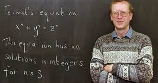

Les différents objectifs de cette page sont de :
Depuis 2004 l'éducation Nationale offre la possibilité aux enseignants de disciplines non linguistiques (DNL) d'effectuer une partie de leur enseignement (en général 1h ou 2h par semaine) dans une langue étrangère soit dans le cadre des sections européennes (SELO), soit à l'intérieur de Lycées qui décident un renforcement de la pratique des langues étrangères. Le dispositif est clairement détaillé sur le site d'Eduscol.
Les enseignants intéressés doivent au préalable passer la certification lors d'une session annuelle organisée par leur rectorat, on trouvera ici : l'extrait du bulletin officiel en précisant les modalités.
Un tiers environ de l'entretien sera consacré à la vérification des connaissances administratives encadrant cet enseignement, en particulier ses modalités d’évaluation au baccalauréat, l'examen peut (et doit donc) se préparer sérieusement. Le site Emilangues propose un cadre très clair pour la préparation à la certification DNL.
Avoir un bon niveau d'anglais est nécessaire mais ne suffit pas pour
préparer des cours de mathématiques en DNL anglais; il ne s'agit pas
de refaire le cours de mathématiques habituel traduit en anglais.
Le but est de conforter les élèves dans leur pratique de la langue
étrangère tout en leur faisant réfléchir sur des problématiques
différentes issues du champ des mathématiques. L'oral doit donc jouer
un rôle primordial dans ces leçons et il est souhaitable de faire en

sorte que chaque élève prenne la parole plus d'une fois lors de
chaque cours. L'objet d'étude doit faire partie du programme de
mathématiques français sans être trop ardu pour ne pas décourager
la prise de parole. La partie du programme concernée est clairement
détaillée sur le site d'Eduscol suivant les classes et les séries.
La séance de mathématiques en anglais est l'occasion de présenter
des notions déjà étudiées sous un jour nouveau en s'inspirant de
"l'approche anglo-saxonne". Les élèves sont alors confrontés à un
double challenge : s'exprimer dans une langue étrangère et faire
des mathématiques dans une perspective différente. Différents types
de supports peuvent être proposés : sites web, documents audio,
vidéos...
Des exemples d'activités fourmillent sur internet, cependant le cours
de DNL ne deviendra vraiment enrichissant que lorsque le professeur
personnalisera ces documents ou commencera à créer ses propres
séquences pédagogiques.
La page d'Eduscol ci dessus, liste de nombreuses ressources regroupées
par académie.
Par ailleurs de nombreux collègues partagent leurs
expériences et leurs documents sur la toile :
Exemples de séquences
Dans le cadre de la nouvelle maquette du lycée, qui doit entrer en vigueur à la rentrée 2019 en classes de première, la place des DNL (et des sections européennes) a été récemment réaffirmée par le ministre de l'éducation Nationale, M. Blanqer, lors de sa présentation de la réforme du baccalauréat le 15 février 2018 : Baccalauréat 2021